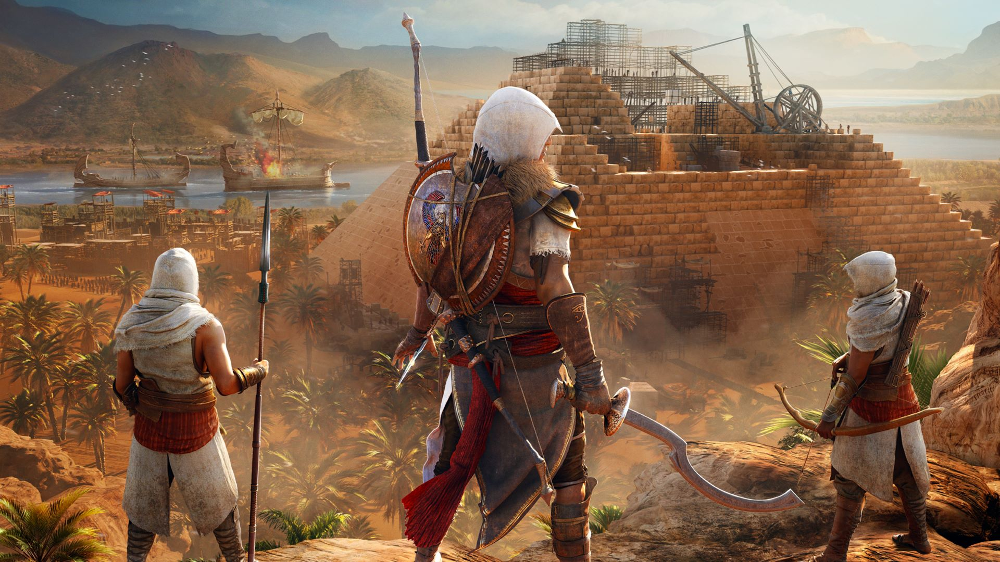
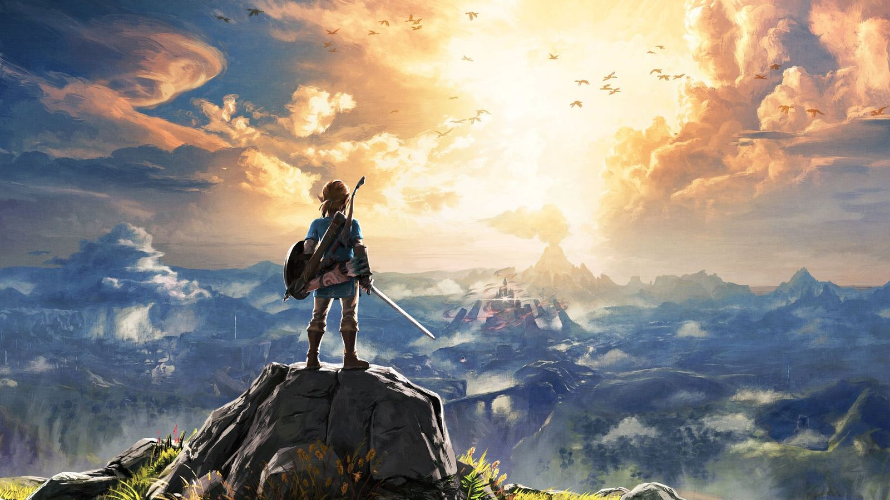

1.Fortnite
EDITEUR: Epic Games
PLATEFORME: PS4, XBOX, MOBILE et PC
Fortnite Battle Royal est un jeu en JcJ dans lequel il faut rester en vie face aux cent joueurs presents sur la map. Il existe plusieurs modes de jeux comme: Solo, Duo Squad (3-4 joueurs par team). Le jeu est dispo gratuitement!!!
Ma note: 8,5/10
Lien pour le telechargement gratuit

2.COD World War 2
EDITEUR: Activision
PLATEFORME: PS4, PC et XBox
Le mode histoire de COD WW2 nous met dans la peau d'un soldat anglais durant le debarquement de Normandie ayant mis fin à la Deuxième Guerre mondiale. Le multijoueur en JcJ contient les memes modes que les anciens COD à la seule difference que les armes sont inspirees d'armes d'epoques.
MA NOTE: 7,5/10
Lien pour le telechargement (50 Euros)

3.Assassin's Creed Origin
EDITEUR: Ubisoft
PLATEFORME: PS4, PC et XBox
Dans son dernier Assassin's Creed, Ubisoft presente un nouvel open word retraçant les origines egyptiennes des Assassins. Les graphismes ultra realistes et quelques nouvelles fonctionnalites viennent donner une bien meilleure experience de jeux à l'utilisateur. Malgre tout cela reste un Assassin's Creed sans grosse nouveautes de jeu... c'est pour cela que je le place à egalite avec WW2.
MA NOTE: 7,5/10
Lien pour le telechargement (70 Euros)

4.Cup Head
EDITEUR: The Greatest Beats
PLATEFORME: PC et XBox
Cup Head est un jeu independant dont les graphismes sont inspires des cartoons des annees 30. Il se joue en solo ou multi, le but etant de passer les differents stades de difficultes à apprendre pour les anticiper afin de vaincre les boss. On notera tout de meme la difficulte elevee du jeu.
MA NOTE: 7/10
Lien pour le telechargement steam (20 Euros)

5.The Legend of Zelda: Breath of the Wild
EDITEUR: Nintendo
PLATEFORME: Nintendo Switch et Wii U
Nintendo a en 2017, enfin sortit son nouveau jeu de la serie Zelda dans lequel nous incarnons une fois de plus le legendaire Link... Malheureusement le fait qu'il ne soit disponible que sur ces deux consoles le rabaisse à une plus faible note...
MA NOTE: 6/10
Lien pour telechargement (60 Euros)

6.Horizon Zero Down
EDITEUR: Sony
PLATEFORME: PS4
Ce nouveau jeu de Sony nous plonge dans un univers dans lequel les "robot-animaux" dominent les humains à cause d'un virus physique. Nous incarnons une jeune femme tentant de vaincre ce terrible virus. Je le place en 6e car à mon avis, un fusil à pompe aurait ete plus adapte qu'un arc pour combattre des robots/animaux géants XD
MA NOTE: 6/10
Lien pour telechargement (40 Euros)